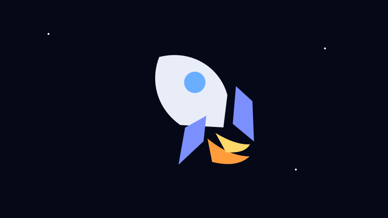

WELCOME, SPACE EXPLORER ✦
Jelajahi Alam Semesta
Kenali planet, bintang, galaksi, sejarah astronomi, dan misi luar angkasa dengan tampilan yang lebih hidup dan gampang dipahami.
9+Topik Tata Surya
5Era Sejarah
4Pertanyaan Kuis
✨ Pilih perjalananmu

🪐 Tata Surya
Kenali Matahari, Bumi, Bulan, Mars, Jupiter, Saturnus, dan benda langit lainnya.

🌌 Alam Semesta
Masuk lebih jauh ke galaksi, nebula, lubang hitam, materi gelap, dan tahun cahaya.

🚀 Eksplorasi
Lihat bagaimana manusia dan robot menjelajah ruang angkasa.
💡 Tahukah Kamu?
Jupiter adalah planet terbesar di Tata Surya. Diameternya sekitar 11 kali diameter Bumi.
Jupiter adalah planet terbesar di Tata Surya. Diameternya sekitar 11 kali diameter Bumi.